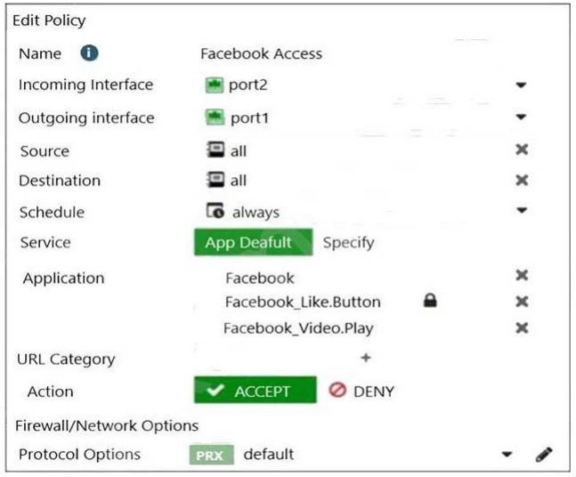

Exhibit A.

Exhibit B.
The exhibits show the SSL and authentication policy (Exhibit A) and the security policy (Exhibit B) tor Facebook. Users are given access to the Facebook web application. They can play video content hosted on Facebook but they are unable to leave reactions on videos or other types of posts. Which part of the policy configuration must you change to resolve the issue?
A. The SSL inspection needs to be a deep content inspection.
B. Force access to Facebook using the HTTP service.
C. Additional application signatures are required to add to the security policy.
D. Add Facebook in the URL category in the security policy.